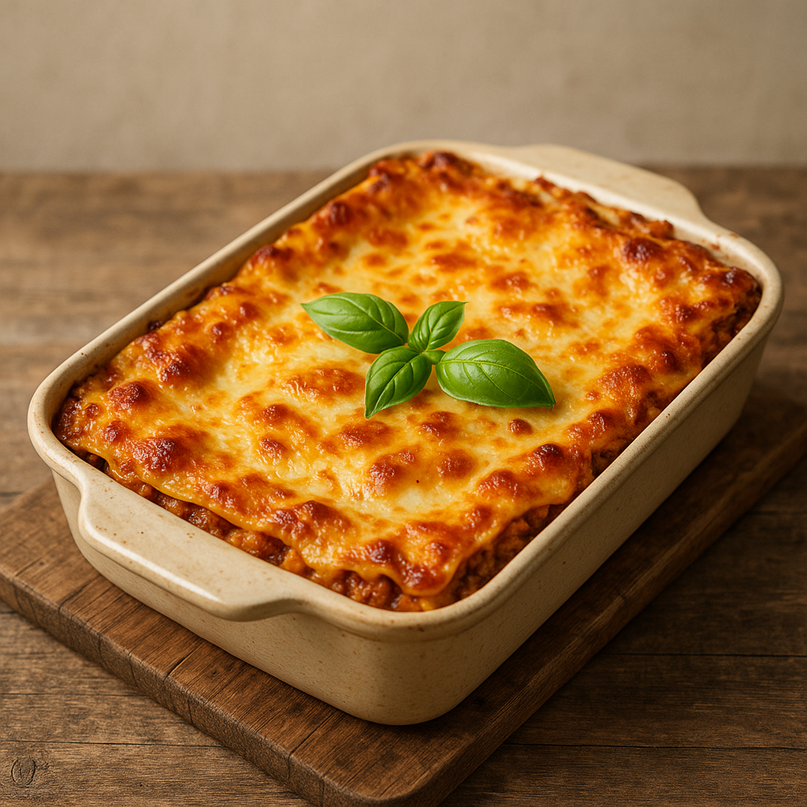

Lasagne
Home

Description
This delicious and timeless recipe holds a place in every home, and is only a few ingredients and steps away from making.
Delicious Lasagne, only a few steps away! Let's begin, shall we!
Ingredients
For this special recipe we're going to need a few ingredients. Thankfully they're something that almost every household has, or at the very least you can remember the ingredients on one hand!
- 500g ground beef
- 1 onion, diced
- 400g can of chopped tomatoes
- 250g lasagne sheets
- 200g grated mozzarella cheese
Steps
In this article, we will recreate it. Let's begin!
- Sauté the diced onion in a pan until soft, then add the ground beef and brown it.
- Add the chopped tomatoes, season with salt and pepper, and let it simmer for 20 minutes.
- In a baking dish, layer meat sauce, lasagne sheets, and cheese. Repeat layers.
- Top with a final layer of sauce and sprinkle mozzarella generously.
- Bake at 180°C (350°F) for 30U+002d40 minutes until golden and bubbling.